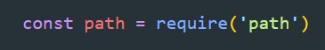
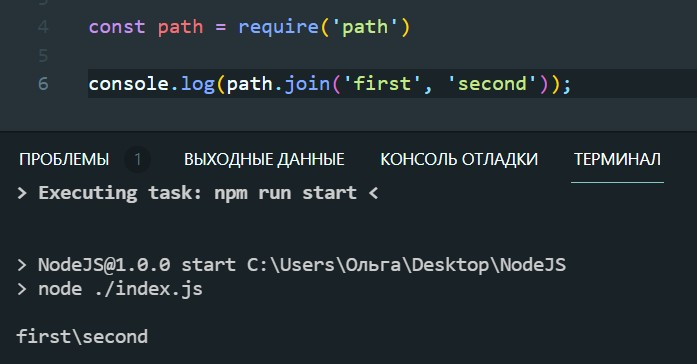

path - это стандартный модуль, который позволяет взаимодействовать с путями. Что бы работать с этим модулем, его нужно импортировать
path.join() - позволяет склеивать пути. Добавляет слеш или обратный слеш в зависимости от операционной системы
